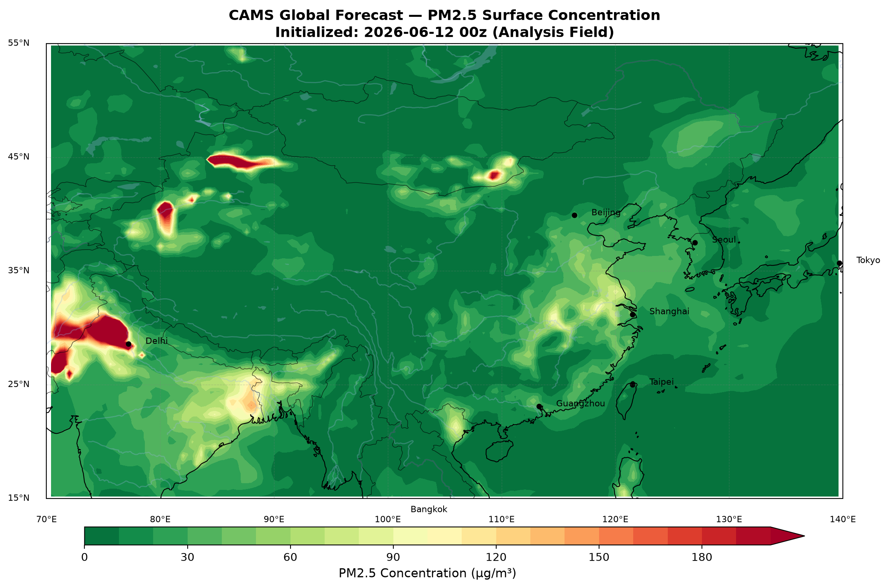

获取数据
理解时间、区域、层次与变量，查询并下载专业气象数据。
Open source research agent
面向气象与地球科学研究的 AI Agent IDE
从数据获取、可控实验到研究记忆与论文交付，在同一个项目目录里完成完整科研工作流。
curl -LsSf https://aero.skyviewor.com/download/install.sh | sh
01 / RESEARCH LOOP
Agent 不只回答问题，而是围绕真实项目目录组织数据、脚本、实验和成果。
理解时间、区域、层次与变量，查询并下载专业气象数据。
隔离脚本、图件和计划，在有边界的上下文中测试不同方案。
将确认过的判断、依据和限制记录为可复用的研究备忘。
版本化 Markdown 正文，并导出 LaTeX、Word 或 PDF。
PROJECT-BOUND AGENT
启动目录就是项目边界。会话、实验、检查点、图片和论文版本都围绕当前工作组织，退出后也能继续。
你 下载 2024 年 7 月华北 ERA5 2 米气温，画月平均图
Aero 已解析时间、区域和变量，正在提交数据请求。
远程数据准备完成 · 42.8 MB · 支持断点续传
Aero 图件已生成并加入当前实验。
figures/era5_t2m_north_china_202407.png
_
REAL OUTPUT / CAMS
Aerolytica 能继续检查下载结果、修正单位与色标，并把最终图片直接嵌入对话和实验目录。

02 / CAPABILITIES
覆盖再分析、预报、地面观测、卫星和降水产品，并校验数据集真实参数。
每个实验拥有独立目录、上下文、检查点和最终报告。
查看变化并恢复阶段状态，恢复前自动保存保护记录。
联网查询、检索文献、阅读 PDF，并把重要结论沉淀为项目备忘。
对正文保存版本、逐行比较和回滚，保留本地插图引用。
通过数据适配器、工具和 Skills 扩展新的数据源与研究方法。
03 / INSTALL
安装器使用独立的 uv CLI 环境与 Aero 私有 Micromamba 运行时，不修改系统 Python 或已有 Conda。
aero init初始化当前研究目录aero chat启动科研 Agentaero doctor检查私有运行时